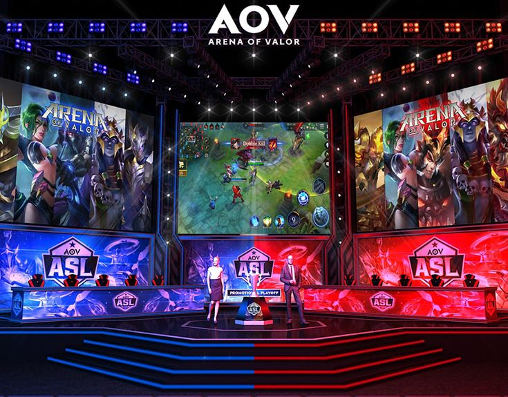

My Portfolio

HOBBY

AND THIS IS MY PORTFOLIO-WEBSITE
Bachelor's Degree in INFORMATION TECHNOLOGY
BOHOL ISLAND STATE UNIVERSITY, 2022 - 2026
High School Diploma
Corella National High School, 2013 - 2019
Hi, I’m Peter, an IT student passionate about technology, problem-solving, and innovation. My journey in the world of information technology is driven by a deep interest in understanding how systems work and how they can be optimized to create meaningful solutions. I enjoy exploring various fields within IT, including programming, cybersecurity, networking, and software development. Whether it’s writing code, troubleshooting hardware, or designing creative solutions, I’m always eager to learn and improve.
Phone: 09463254964
Email: peter.daraman@bisu.edu.ph